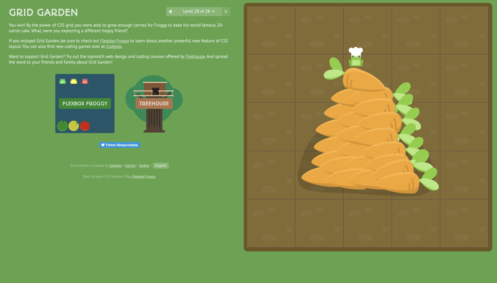
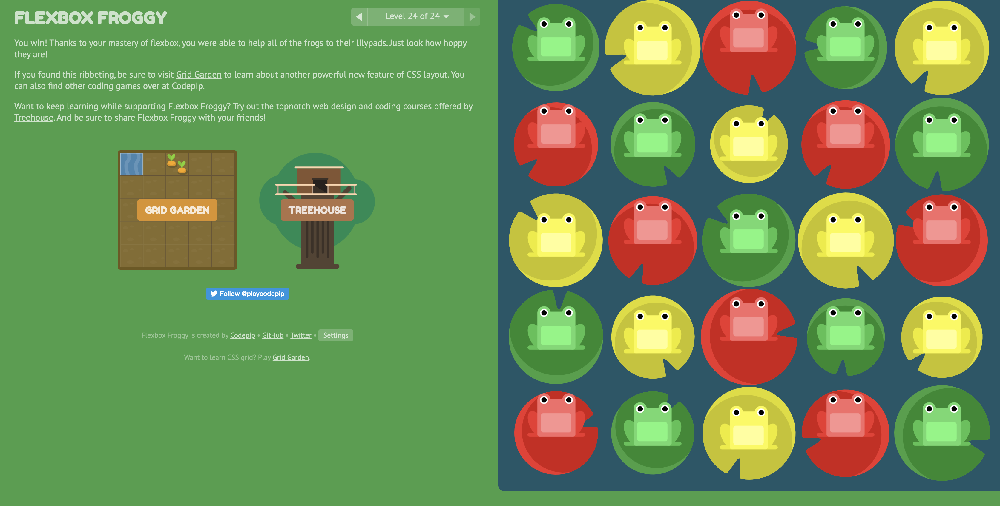

Week 5: CSS
Exercise Response:
This was so freaking cute omg. I would use a lot of these properties before they were
explained to me in Flexbox Froggy and Grid Garden without knowing what I was doing
(usually I’d have to go to stack overflow or would pick random words that seemed right).
I had actually been doing this puzzle piece method since I started coding, so it was
actually really cool to see the logic behind the properties.
Although at the beginning, Flexbox Froggy and Grid Garden seemed easy, I did not expect
it to get so intense, and to be honest I’m still a little confused about flex boxes.
However, it was super helpful to list out the properties and their subsections (ex:
flex-direction= row; row-reverse; column; column-reverse) so that even when things did get confusing,
I still had a directory in front of me.
It was also really nice when the interface changed automatically so I didn’t have to keep refreshing
the page as is status quo (JavaScript trick I’m guessing?). Nevertheless, it was a really nice
exercise and I’m excited to practice grids and flex boxes more in the future.


Home